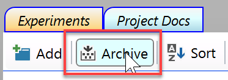
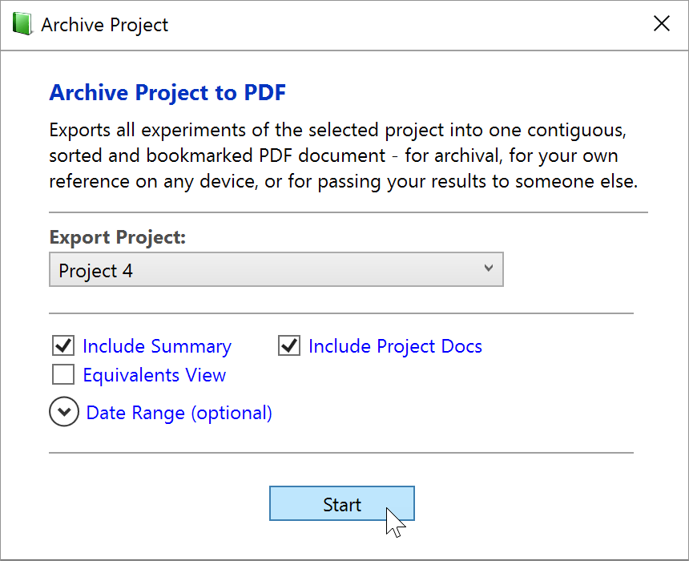
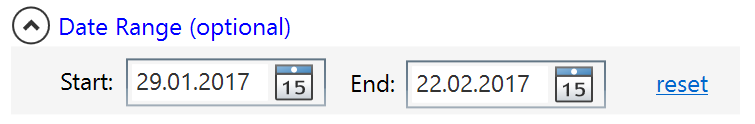
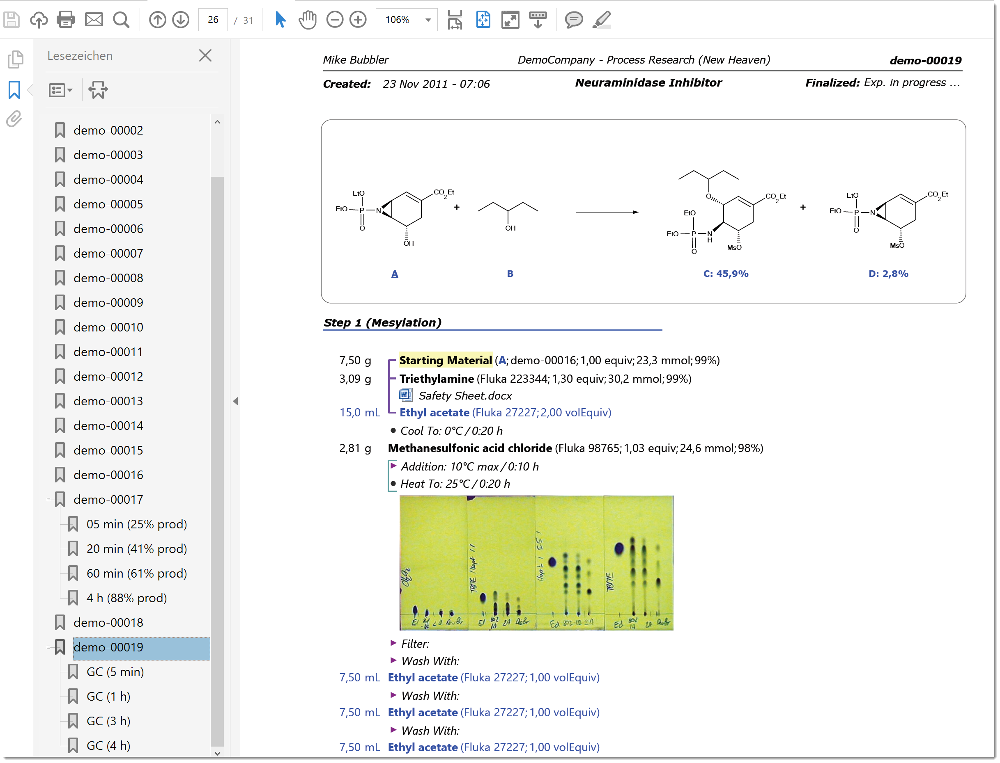
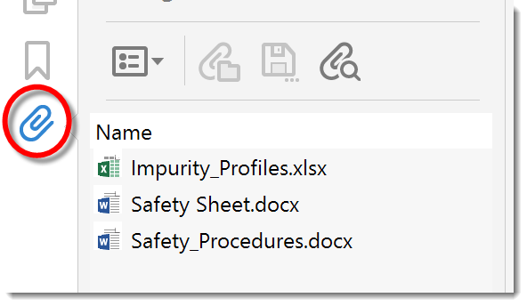

Portable Archives
Please note that while project archives are very useful for storing project experiments in a single PDF, they are not a replacements for the Espresso LTA long term archive infrastructure, which continuously processes finalized server experiments into PDF/A-3b format and stores them into a searchable database.
Espresso ELN project archival advantages:
- Platform-independent archival of all project experiments into one single PDF document. This document contains all project experiments sorted and bookmarked by experiment-ID. Embedded documents, e.g. spectra, as part of the document and accessible as sub-bookmarks for each experiment.
- Carry your experiments with you on a smartphone, tablet, laptop, etc., for your read-only reference.
- Pass your experiments to others, e.g. your team leader or to a third party.
To start archiving your project experiments, click the Archive button on top of the experiment navigation tree.

A dialog appears, where you can select the project to be archived, in addition to several archival options:

- Include Summary: If this option is checked, a table of contents will be created between the header page and the beginning of the experiment pages. This is the default.
- Include Project Docs: If this option is checked, also the project-level documents are embedded into the archive PDF. Please note that documents embedded into experiments are always embedded into the archive PDF.
- Equivalents View: If this option is checked, all experiments are rendered in in equivalents view, i.e. the left material amount column contains equivalents instead of absolute weights and volumes.
- Date Range: Optionally, by clicking the "Date range" expander button, you can also specify an experiment creation date range to export; if not specified, all project experiments are exported:

After clicking Start, the PDF document begins rendering, which can take a while. After completion, the generated PDF document is opened. Please make sure to switch on the bookmarks panel in your PDF viewer; also note the sub-bookmarks for embedded PDF documents:

If any of your archived experiments contains embedded non-PDF documents or embedded project-level documents, then these are accessible from the Attachments section of your PDF viewer - at least if it supports this PDF standards functionality. Some simple PDF viewers may not support embedded documents, but e.g. the freely available Adobe Acrobat Reader or Foxit Reader applications fully support it:

Just double-click the desired file to open it. Of course, an application capable of opening the document must be present on your machine.